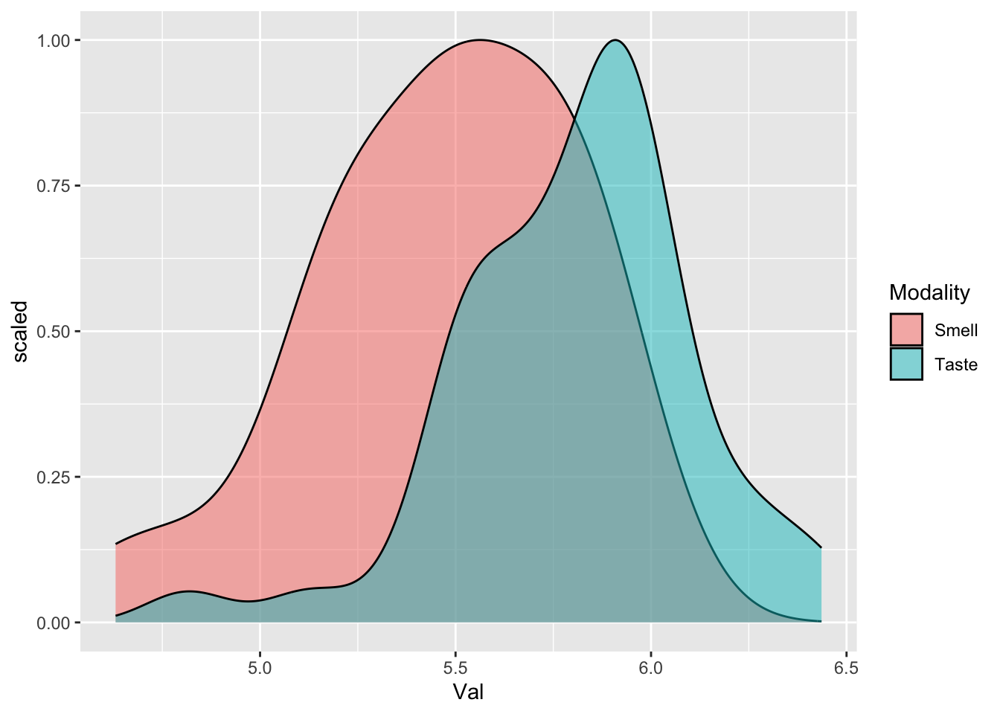

Chapter 10 Categorical Predictors
Remember that we talked about four basic types of models in terms of their dependent and independent variable types. Variables can assume continuous values (e.g. reaction time, voicing duration, word count, etc.) or categorical values (e.g. positive-negative, gender, agreement type, word order (SVO - SOV) etc.).
| Predictor Type (independent var.) | Outcome Type (dependent var.) |
|---|---|
| Continuous | Continuous |
| Categorical | Continuous |
| Continuous | Categorical |
| Categorical | Categorical |
So far we built models where both the predictor and and the outcome are continuous. Now, we are moving to modeling data where the predictors are categorical and the outcomes are continuous.
10.1 Categorical Predictor - Continuous Outcome
Models with categorical predictors are quite common in linguistics as well as in many fields that rely on data analytics. Here are some examples:
- What are the reaction times of children vs. adults for a picture naming task?
- How does pro-drop impact the acceptability ratings of clauses. (Assuming ratings are continuous).
- How does NP ellipsis impact time to comprehend a linguistic expression?
Outside linguistics, especially in UX Research, people carry out a lot of A/B testing. For example, they check to see if a particular change to the UI has a significant impact on the user behavior. Here are some examples:
- What is the impact of the background color on the length of stay on a webpage?
- How much money do people from different cities spend on our platform?
- How does the language of a campaign affect the amount of donations made by people?
Categorical predictors are used whenever you compare two or more groups based on some classification (e.g. age, education level, native speaker status, and so on.).
10.2 Taste vs. Smell Words
The data and analysis for this section comes from Bodo Winter’s Chapter 7.
Smell words have been claimed to be more negative than taste words. I don’t know if this is true for every language or not but Turkish presents some very nice data points in this direction. Consider the following two expressions.
- Burası (çok) kokuyor.
- Bu (çok) tatlı.
Just the verb kok “smell” seems to have a negative connotation. On the other hand, the adjective tatlı “tasty” whose root tat “taste” and the suffix -lı simply means “with” has a positive connotation. While this is simply a hunch, we don’t have enough evidence for Turkish to claim that this is in fact true. Let’s hope that someone will run an experiment for Turkish and report the results. For now, we’ll use the senses_valence dataset from Bodo Winter’s book.
Let us read in the dataset and see what it looks like.
#Import tidyverse
library(tidyverse)
#Read in the data
data <- read_csv('data/winter_2016_senses_valence.csv')
#print the head to see what it looks like
data## # A tibble: 405 × 3
## Word Modality Val
## <chr> <chr> <dbl>
## 1 abrasive Touch 5.40
## 2 absorbent Sight 5.88
## 3 aching Touch 5.23
## 4 acidic Taste 5.54
## 5 acrid Smell 5.17
## 6 adhesive Touch 5.24
## 7 alcoholic Taste 5.56
## 8 alive Sight 6.04
## 9 amber Sight 5.72
## 10 angular Sight 5.48
## # ℹ 395 more rowsThe dataset consists of three variables:
- Word: A word associated with some sense.
- Modality: Modality of the sense (touch, smell, etc.)
- Valence: A numeric value representing the attractiveness-aversiveness of a word.
- Higher Valence is better. See Wikipedia for more on valence.
For now, we’re only interested in smell and taste. Yet, it looks like the data has more than that. Let’s print the unique values in the Modality column to see all the categories.
## [1] "Touch" "Sight" "Taste" "Smell" "Sound"Let’s now select the rows that have only smell and taste values. For this, we will use the filter function.
# Filter the data
senses_data <- filter(data, Modality %in% c('Smell', 'Taste'))
# Check the unique values to make sure
unique(senses_data$Modality)## [1] "Taste" "Smell"Let us quickly get some summary statistics using the `summarize()’ function.
#pipe the data to a group_by function
#then pipe the groupings to the summarize function
# create the summary variables for mean and sd
senses_data %>% group_by(Modality) %>%
summarize(M = mean(Val), SD = sd(Val))## # A tibble: 2 × 3
## Modality M SD
## <chr> <dbl> <dbl>
## 1 Smell 5.47 0.336
## 2 Taste 5.81 0.303It looks like the mean valence for the two groups (smell and taste) are slightly different. Without fitting a model, we won’t yet know if this difference is significant (i.e. meaningful but not by chance).
Before fitting a model though, let us visualize the data to see what it looks like. For categorical variables, it is often useful to plot a box-and-whiskers plot.
senses_data %>% ggplot(aes(x = Modality, y = Val, fill = Modality)) +
geom_boxplot()+
theme_minimal()
An alternative way to plot the data is to use density graphs, which are essentially smoothed histograms.

10.3 Contrasts & Coding
Linear models are essentially linear equations. This means that they are defined on numeric values (e.g. 5, 0.2, etc.) but not categorical values (e.g. child-adult, SOV-VSO, etc.). To be able to use linear models with categorical values, we need to convert our categories into some numeric values that can be used in a linear equation. This conversion of categorical values into numeric values is called contrast coding. There are various ways in which this coding can be done and they have slightly different interpretations. While numbers are somewhat arbitrary, the interpretation of the coefficients depends on the choice of the coding technique.
10.3.1 Treatment Coding.
One way of coding the difference between two categories is to convert them into ones and zeroes. This is called treatment coding. Sometimes it is also called dummy coding.
| Word | Category | Treatment Coding |
|---|---|---|
| odor | smell | 0 |
| sweet | taste | 1 |
| acrid | smell | 0 |
Let us do this by hand before training a model.
# Create a new column with 0 for smell and 1 for taste
senses_data <- mutate(senses_data, treatment = ifelse(Modality == 'Taste', 1, 0))
senses_data## # A tibble: 72 × 4
## Word Modality Val treatment
## <chr> <chr> <dbl> <dbl>
## 1 acidic Taste 5.54 1
## 2 acrid Smell 5.17 0
## 3 alcoholic Taste 5.56 1
## 4 antiseptic Smell 5.51 0
## 5 aromatic Smell 5.95 0
## 6 astringent Taste 5.96 1
## 7 barbecued Taste 6.05 1
## 8 beery Taste 6.07 1
## 9 bitter Taste 5.12 1
## 10 bland Taste 5.75 1
## # ℹ 62 more rowsNow that our categories are turned into numeric values, we can run a model. Let us fit a model where valence is a function of modality using our treatment codes.
##
## Call:
## lm(formula = Val ~ treatment, data = senses_data)
##
## Coefficients:
## (Intercept) treatment
## 5.4710 0.3371In treatment coding, the intercept becomes the mean of one of your variables whereas the slope is the difference between the two means. You can see this clearly once you plot a linear function between the two variables.
ggplot(senses_data, aes(x= treatment, y= Val))+
scale_x_continuous(limits = c(-1,2)) +
geom_point()+
geom_smooth(method='lm', se=F)Let us now take a look at the usual numbers R2 and p-value to interpret how our model is doing.
##
## Call:
## lm(formula = Val ~ treatment, data = senses_data)
##
## Residuals:
## Min 1Q Median 3Q Max
## -0.99315 -0.20870 0.04343 0.19115 0.62788
##
## Coefficients:
## Estimate Std. Error t value Pr(>|t|)
## (Intercept) 5.47101 0.06297 86.889 < 2e-16 ***
## treatment 0.33711 0.07793 4.326 4.95e-05 ***
## ---
## Signif. codes: 0 '***' 0.001 '**' 0.01 '*' 0.05 '.' 0.1 ' ' 1
##
## Residual standard error: 0.3148 on 70 degrees of freedom
## Multiple R-squared: 0.2109, Adjusted R-squared: 0.1997
## F-statistic: 18.71 on 1 and 70 DF, p-value: 4.951e-05Normally, you don’t have to do the treatment coding by hand. R will do it automatically for you. We did it manually to make sure we understand what’s under the hood.
##
## Call:
## lm(formula = Val ~ Modality, data = senses_data)
##
## Coefficients:
## (Intercept) ModalityTaste
## 5.4710 0.3371Interpreting the coefficients: Our model is simply the following mathematical model.
\[valence = 5.8 + (−0.3) * modality\] So, our model predicts only two values.
#Create a dataset consisting of categories in the data
preds <- tibble(Modality = unique(senses_data$Modality))
# Print to see what they look like
preds## # A tibble: 2 × 1
## Modality
## <chr>
## 1 Taste
## 2 Smell## 1 2
## 5.808124 5.47101210.3.2 Sum Coding
Sum coding is a slightly different coding mechanism. Instead of using 0 and 1 as the coding scheme, we use -1 and 1 as the coding scheme. This has the benefit of having the mean of the means as the intercept. To be able to use R’s coding functionality, we should convert our categorical values as factors.
## # A tibble: 72 × 4
## Word Modality Val treatment
## <chr> <fct> <dbl> <dbl>
## 1 acidic Taste 5.54 1
## 2 acrid Smell 5.17 0
## 3 alcoholic Taste 5.56 1
## 4 antiseptic Smell 5.51 0
## 5 aromatic Smell 5.95 0
## 6 astringent Taste 5.96 1
## 7 barbecued Taste 6.05 1
## 8 beery Taste 6.07 1
## 9 bitter Taste 5.12 1
## 10 bland Taste 5.75 1
## # ℹ 62 more rowsNext, we can use the contrasts function to see what the current coding scheme looks like.
## Taste
## Smell 0
## Taste 1We can also use R’s built in cont function to get various coding types.
For treatment coding:
## 2
## 1 0
## 2 1For Sum coding:
## [,1]
## 1 1
## 2 -1More than 2 variables:
## 2 3
## 1 0 0
## 2 1 0
## 3 0 1## [,1] [,2]
## 1 1 0
## 2 0 1
## 3 -1 -1More than 2 variables:
## 2 3 4 5
## 1 0 0 0 0
## 2 1 0 0 0
## 3 0 1 0 0
## 4 0 0 1 0
## 5 0 0 0 1## [,1] [,2] [,3] [,4]
## 1 1 0 0 0
## 2 0 1 0 0
## 3 0 0 1 0
## 4 0 0 0 1
## 5 -1 -1 -1 -1Let us use sum coding on our data.
#Create a new column by copying the modality factors (Taste and Smell)
senses_data <- mutate(senses_data, sum_coding=Modality)
#Use sum coding using contrasts() and contr.sum()
contrasts(senses_data$sum_coding) <- contr.sum(2)
#run constrasts to see if it worked
contrasts(senses_data$sum_coding)## [,1]
## Smell 1
## Taste -1Now we can fit a linear model and see what the coefficients look like.
##
## Call:
## lm(formula = Val ~ sum_coding, data = senses_data)
##
## Coefficients:
## (Intercept) sum_coding1
## 5.6396 -0.1686The intercept is now the mean of the means. The slope is halved.
Let us also plot the model to see where the intercept is.
10.4 Categorical Predictors with more than 2 levels
Remember that originally our data had 5 levels (“Touch” “Sight” “Taste” “Smell” “Sound”). Let us build a linear model that includes all of them.
##
## Call:
## lm(formula = Val ~ Modality, data = data)
##
## Coefficients:
## (Intercept) ModalitySmell ModalitySound ModalityTaste ModalityTouch
## 5.57966 -0.10865 -0.17447 0.22846 -0.04523